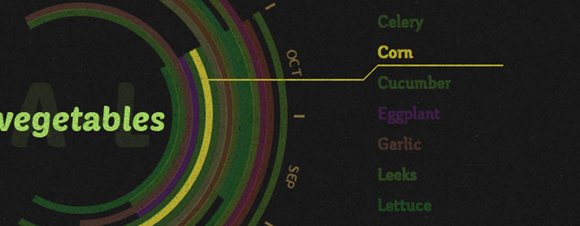
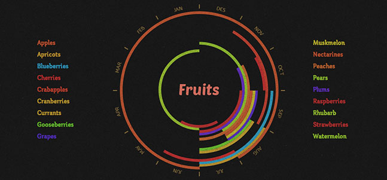
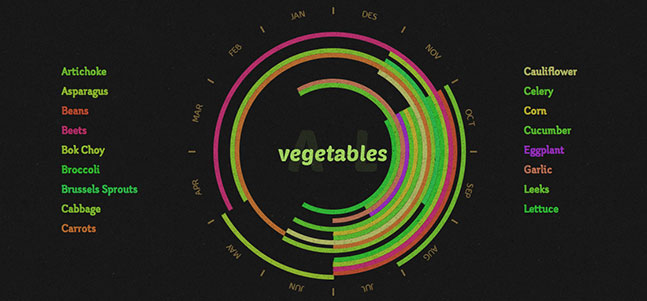
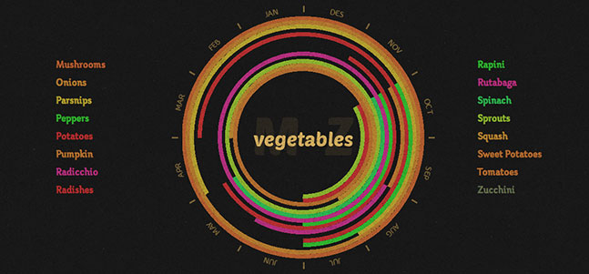

Seconal Food Infographic
View demo →This is an infographic for the people of Ontario to know when they should buy certain foods because they are in season and fresh. The information for this came from the official government site, and was inspired by other seasonal food posters. What I have tried to do in this projects is to have a very vibrant atmosphere. The color hue of the bars is the color of its food and vegetable and the saturation with brightness is kept the same for consistency. Texture laid over the infographic to create a sense of a real paper poster is laid over a wall.
